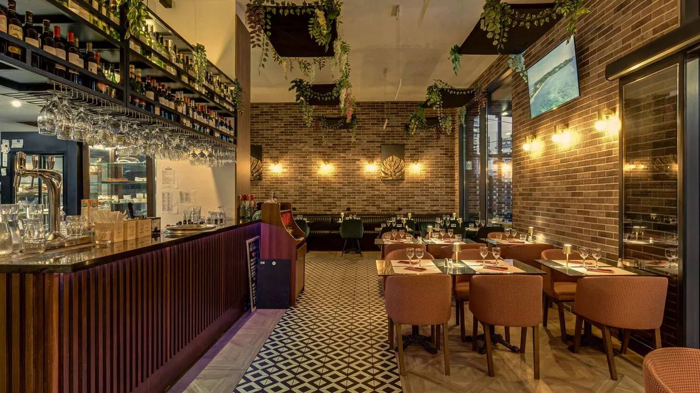
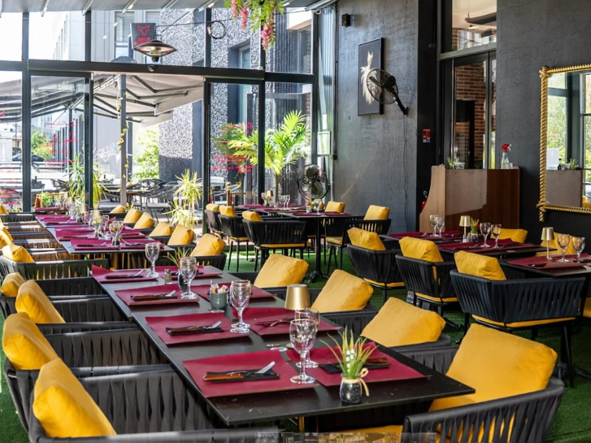

Menu enfant
10,00 €- Nuggets ou steak haché, frites
- Diabolo, jus de fruits ou sirop à l'eau
- Une boule de glace : vanille, chocolat, fraise ou citron

Restaurant · Bordeaux
Viandes d'exception grillées au feu de bois, à deux pas de la gare Saint-Jean.
4,6/5 · 455 avis Google
Un steakhouse de quartier à Belcier, entre la gare Saint-Jean et l'église du Sacré-Cœur. Les viandes sont grillées au feu de bois, avec des produits frais et une carte des vins pour les accompagner.
Grande salle, terrasse chaleureuse et une équipe qui vous accueille pour un déjeuner rapide comme pour une soirée entre amis ou en famille. Accessible en tram, lignes C et D, arrêt Belcier.
Repas d'entreprise, anniversaires, soirées festives : la grande salle et la terrasse accueillent les groupes, jusqu'à la privatisation complète.

Viandes grillées au feu de bois, accompagnement et sauce au choix. Carte des vins sur place.
Grillées au feu de bois. Un accompagnement au choix : frites maison, riz, écrasé de pommes de terre, légumes du soleil ou salade verte. Sauce au choix : bleu d'Auvergne, crème ciboulette, échalotes confites ou poivre.
Accompagnement supplémentaire 3 € · sauce supplémentaire 0,50 € · tranche de foie gras poêlé 4 €.
| Lundi | 12h – 14h30 19h – 23h |
|---|---|
| Mardi | 12h – 14h30 19h – 23h |
| Mercredi | 12h – 14h30 19h – 23h |
| Jeudi | 12h – 14h30 19h – 23h30 |
| Vendredi | 12h – 14h30 19h – 23h30 |
| Samedi | 12h – 14h30 19h – 23h30 |
| Dimanche | Fermé |
Tram C et D, arrêt Belcier. Fermé le dimanche.
Réservation en ligne jusqu'à 11h45 pour le midi, sinon par téléphone. Groupes : appelez-nous.